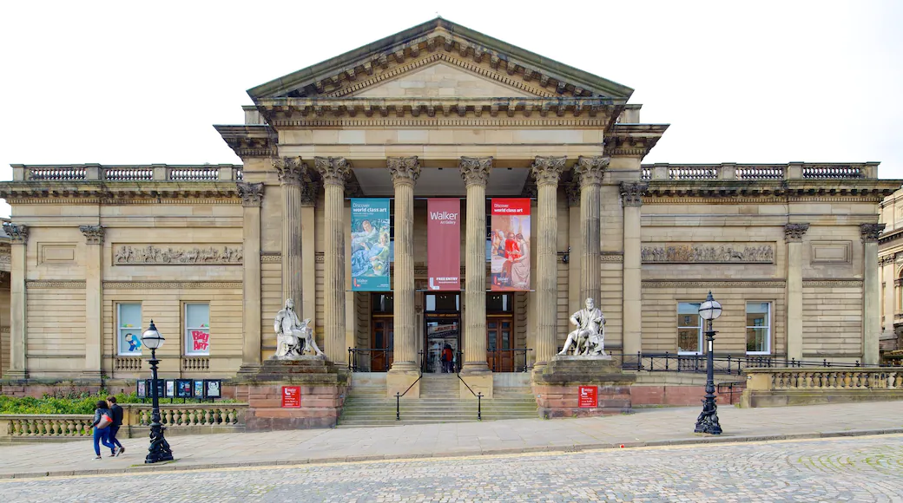

워커아트 갤러리
영국에서 가장 큰 예술 기관 중 하나인 워커 미술관은 "북부의 국립 미술관"이라는 애칭으로 불리며 라파엘전파에서 뱅크시에 이르는 다양한 작품을 전시하고 있습니다.
미술관 투어의 시작점이 되는 1번 룸에는 중세와 르네상스 시대의 작품이 전시되어 있는데, 얀 모스타르트의 젊은 남자의 초상과 헨리 8세의 근엄한 초상화가 특히 유명합니다.
레이튼의 광야의 엘리야 , 로제티의 단테의 꿈 등의 명화를 관람할 수 있는 하이 빅토리안 룸도 꼭 들러보세요. 인상파 룸에는 모네, 드가, 세잔의 걸작이 걸려 있습니다.
11번 룸에서는 영국의 거장인 루치안 프로이트와 L.S. 로리의 작품을 감상하고 양방향 소통형 연대표를 따라 1880~1950년 영국 미술의 역사를 차근차근 알아보실 수 있습니다.
좀 더 최근 작품을 보려면 12번 룸을 방문해 보시면 됩니다.
영국에서 가장 유명한 회화 공모전인 "존 무어스 프라이즈"에서 수상한 많은 작품을 보실 수 있는데, 이 공모전은 2년마다 워커 미술관에서 전시회를 여는 것으로 대미를 장식합니다.